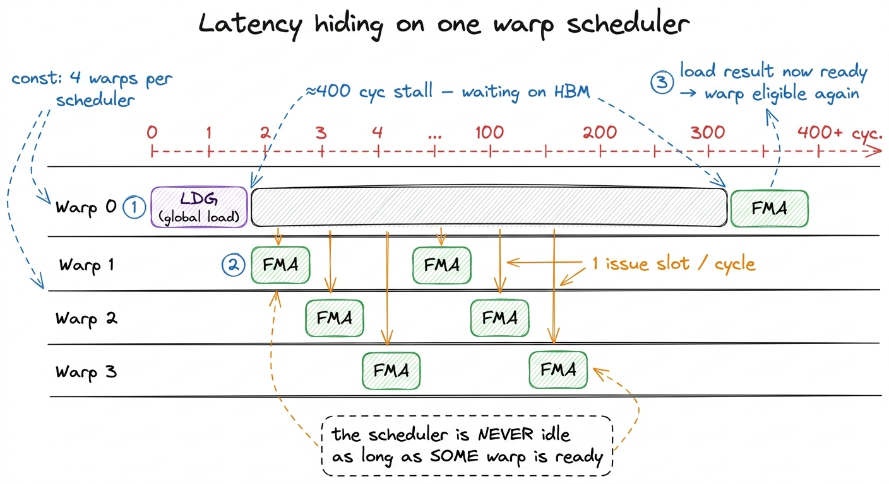
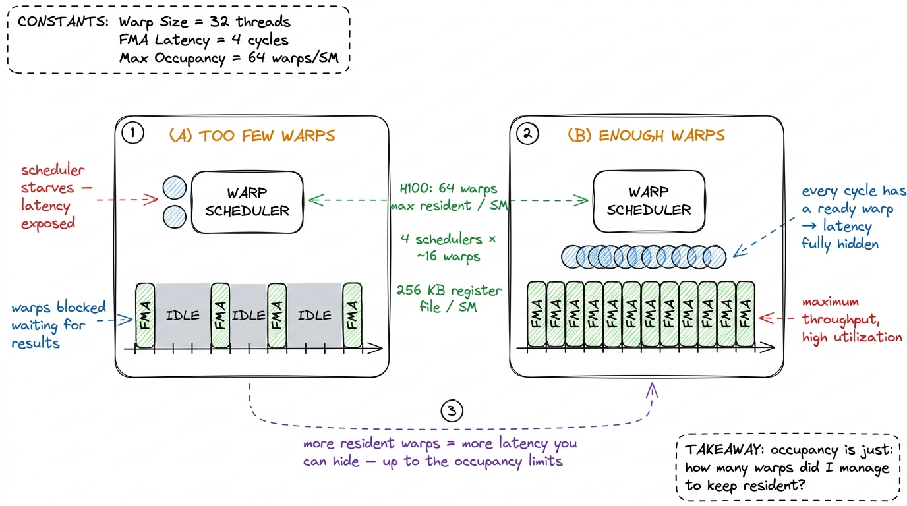
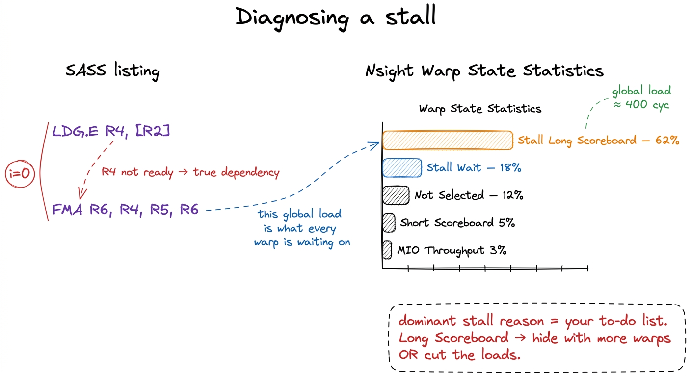
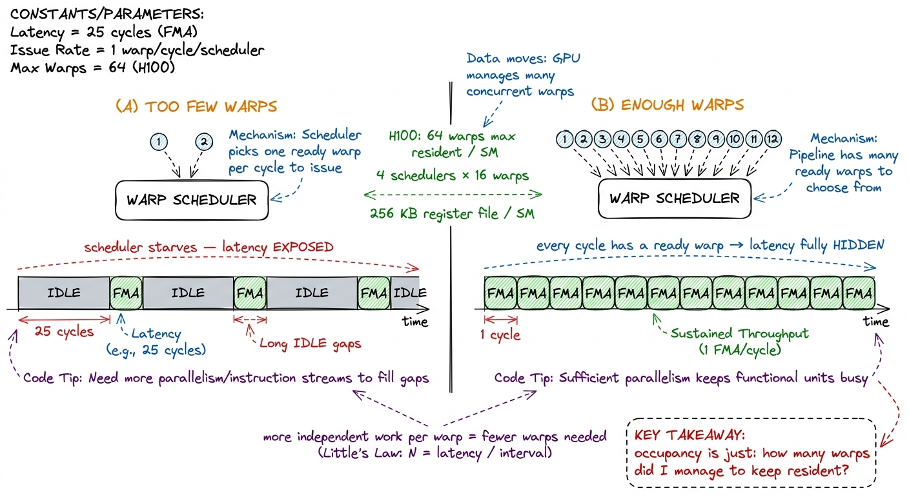
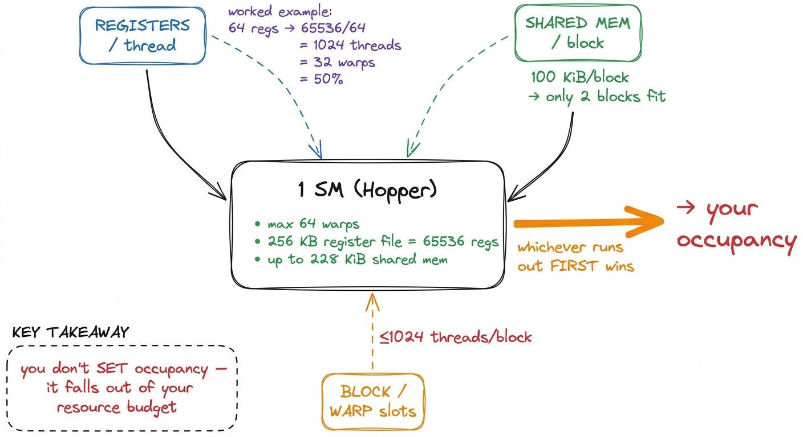
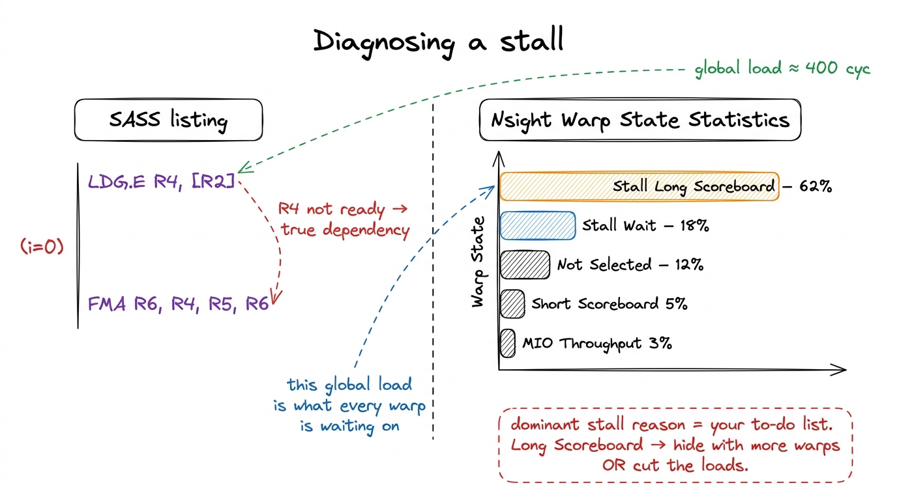

The warp scheduler & latency hiding
Let me start with a number that should bother you. A single load from global memory on an H100 costs on the order of 400 cycles. That is not a typo, and it is not a worst case — it is the ordinary, expected latency of reaching out to HBM and waiting for the bytes to come back. Four hundred cycles is a long time. At the SM's clock, that is enough time to do hundreds of multiply-adds. If the chip simply sat and waited for each load, it would spend almost its whole life waiting.
So here is the question this article answers, and I want you to hold it in your head the whole way through: how does a GPU stay busy when every trip to memory costs 400 cycles? The answer is a small piece of hardware called the warp scheduler, and understanding it is the difference between a kernel that crawls and a kernel that flies. Everything downstream — occupancy, stall reasons, why some GEMM kernels deliberately run "half empty" — falls out of this one idea once you see it clearly.
We are going to build the idea from nothing. You do not need to know what a warp is, or what an SM is, or what occupancy means. We will start with the CPU trick you already half-know, watch it fail on a GPU, and then discover the GPU's trick by asking what else you could do with 400 idle cycles.
First, the thing a CPU does — and why it can't scale here
Think about how your laptop's CPU copes with slow memory. It has a few tricks. It has big caches, so most loads never touch main memory at all. It has out-of-order execution, so while one load is in flight, it hunts ahead in the instruction stream for other independent work to do. It has branch prediction and speculation so it can keep running past an unresolved branch. All of this is latency reduction and latency avoidance: the CPU spends an enormous transistor budget trying to make sure any single thread almost never has to stop and wait.
This works beautifully for one thread, or a handful. But it is expensive. A big out-of-order core is mostly not arithmetic units — it is reorder buffers, rename tables, load-store queues, branch predictors. All that machinery exists to keep one instruction stream moving smoothly.
Now imagine you want to do a matrix multiply with millions of independent multiply-adds. You do not want a handful of very clever threads. You want a flood of dumb ones. And the moment you have a flood of threads, you can afford a completely different bargain with latency.

figure rendering · Two opposite bargains with slow memory. The CPU makes one thread fast;That picture is the whole article in one frame, so keep it near. The CPU strategy is latency reduction — make the wait shorter or hide it from one stream. The GPU strategy is latency hiding — accept that the wait is 400 cycles and arrange to always have other useful work to fill it. My working hypothesis for everything that follows: if I can keep enough independent work resident, the 400-cycle stall never shows up in the wall-clock time at all. Not reduced. Hidden. Covered so completely that from the outside you cannot tell it was ever there.
Let's now build the machinery that pulls this off.
The warp: 32 threads that move as one
The GPU does not schedule threads one at a time. That would be too fine-grained — you would spend all your time deciding what to run next. Instead it bundles threads into groups of 32, called a warp, and the 32 threads in a warp execute the same instruction at the same time, in lockstep, one instruction broadcast across all 32 lanes.1 One warp is always exactly 32 threads on every NVIDIA GPU shipped to date. It is baked into the ISA, not a tunable knob. A thread block of 1024 threads is therefore exactly 32 warps. AMD's equivalent, the "wavefront," is 64 lanes — but on NVIDIA, 32, always.
Why 32, and why lockstep? Because if 32 threads are guaranteed to run the same instruction, you only need one instruction decoder and one scheduling decision to feed all 32 arithmetic units. That is the deal: threads give up the freedom to each do their own thing, and in exchange the hardware can be almost all arithmetic and almost no control logic. The warp is the unit of everything from here on. When we say "a warp stalls," we mean all 32 of its threads are stuck together, waiting for the same load.

figure rendering · Zoom from a 1024-thread block down to one 32-lane warp. One decode andNow, where do these warps live? On a piece of the chip called a Streaming Multiprocessor (SM). An H100 has 132 of them. Think of the SM as one small, self-contained processor with its own arithmetic units, its own fast on-chip memory, and — crucially — its own big pile of registers called the register file. Every warp that is "resident" on an SM has its state sitting in that register file, all the time, simultaneously.
That last sentence is the secret. Hold onto it, because it is why the next trick is free.
The trick: switch warps every cycle, for free
Here is the move. Each SM is split into four sub-partitions (also called processing blocks). Each sub-partition has its own warp scheduler — the small piece of hardware we came here to understand. And the warp scheduler does exactly one job, once per clock cycle: it looks at the pool of warps assigned to it, finds one whose next instruction has all its operands ready, and issues that instruction.2 On Hopper each sub-partition issues one instruction per cycle from one warp — a single issue slot per scheduler per cycle. Dual-issue from a single warp went away after the Kepler/Maxwell era; modern SMs get throughput from many warps, not from issuing two instructions from one warp at once.
Now watch what happens when a warp stalls. Warp 0 issues a global load. That load will not come back for ~400 cycles. On a CPU, this is a problem — the thread is stuck. On the GPU, the scheduler simply shrugs and picks a different warp next cycle. Warp 1 is ready? Issue from warp 1. Next cycle, warp 2. The cycle after, warp 3. Warp 0 is still waiting for its bytes, and nobody cares, because there is always someone else ready to run.
And here is the part that makes it free: there is no context switch cost. On a CPU, switching threads means saving one thread's registers to memory and loading another's — microseconds of overhead, because the register state has to be swapped in and out. On the GPU, every resident warp's registers are already sitting in the register file at the same time.3 This is the deepest reason GPU context switches are ~free while CPU ones cost microseconds: nothing is saved or restored. Switching warps is just choosing a different set of registers to read this cycle. The price you pay is that the register file must be huge — 256 KB per SM — to hold every resident warp's state at once. A "context switch" is nothing more than the scheduler choosing to read a different warp's registers this cycle. No save, no restore, no pipeline flush. One cycle you're running warp 3, the next cycle warp 7, and it costs literally nothing.

figure rendering · One issue slot, many warps. The 400-cycle stall on warp 0 is completelThe picture above is the mechanism in one frame. There is exactly one issue slot per scheduler per cycle. The way you fill that slot on every cycle is not by making one warp faster — it is by having enough warps around that at least one is always eligible. Speed comes from breadth, not depth.
Which raises the obvious next question, the one an engineer immediately asks: enough warps — how many is enough?
The napkin math: how many warps do you actually need?
This is where latency hiding stops being a nice story and becomes arithmetic you can do on a napkin. Ask it directly: if a global load takes ~400 cycles, and one scheduler can issue one instruction per cycle, how many independent warps do I need to keep that scheduler busy for the whole 400 cycles?
Let's reason it out with a deliberately pessimistic model first. Suppose every warp does exactly one thing: it issues a load, then immediately needs the result and blocks for 400 cycles. Under that model, warp 0 issues at cycle 0 and is then dead until cycle 400. To fill cycle 1, I need a fresh ready warp. Cycle 2, another. All the way to cycle 400. So I'd need on the order of 400 warps to keep the slot full until warp 0 wakes up.
Four hundred warps per scheduler is absurd — there aren't nearly that many. So if that were the real requirement, latency hiding would be hopeless. But it isn't the real requirement, and seeing why is the whole insight.
Real code does not issue a load and immediately block. Between two dependent memory operations, a warp typically runs a handful of independent arithmetic instructions — a few multiply-adds it can do while it waits. Those instructions fill issue slots too. So the question isn't "how many cycles is the stall," it's "what fraction of a warp's instructions are stalling ones." This is just Little's Law wearing a GPU costume: the number of warps you need in flight equals the latency you're hiding divided by the interval between the instructions that actually matter.
Put a concrete tiny example to it. Say each warp, on average, issues one instruction every 10 cycles that isn't covered by its own arithmetic — an interval of 10 cycles between "real" issues — and you're hiding a 400-cycle memory latency. Then you need about 400 / 10 = 40 warps worth of independent work to cover it. Push more independent arithmetic between your loads and that interval grows, the required warp count shrinks. This is the lever, and later kernels pull on it hard.4 The exact numbers depend on the mix of instructions and their individual latencies — an FMA is only a handful of cycles, a global load hundreds. Little's Law gives the shape of the answer, not a precise integer. The point is directional: more independent work per warp means fewer warps needed to hide the same latency.

figure rendering · Two warps starves the scheduler; enough warps keeps the issue slot fulThe direct link to occupancy
Everything above pays off in one word: occupancy. Occupancy is the ratio of warps you actually have resident on an SM to the hardware maximum. On the H100 an SM can hold up to 64 resident warps — that's 2048 threads — so if you manage to keep 32 warps resident, you're at 50% occupancy.5 64 warps is the architectural ceiling on Hopper (and the same on A100 before it). You rarely hit it, because registers or shared memory run out first — those are the real limiters, and occupancy is what falls out of them, not a value you set directly.
And that is the crucial reframe: occupancy is not a knob you turn. You cannot type "give me 75% occupancy." Occupancy is a consequence of how much of the SM's finite resources each of your blocks consumes. Three resources fight over the same SM, and whichever one runs out first sets your ceiling:
- Registers. The SM has a 256 KB register file — that's
6553632-bit registers — shared across every resident thread. Do the division. If each thread demands 64 registers, then65536 / 64 = 1024threads can be resident, which is 32 warps, which is 50% occupancy — and that is your ceiling no matter how many blocks you launch. Now ask the compiler for 128 registers per thread and65536 / 128 = 512threads fit: you just halved your occupancy by asking for more registers.6 This is why the-maxrregcountflag and__launch_bounds__exist: they cap per-thread register usage, forcing the compiler to spill to local memory rather than shrink occupancy. Sometimes that trade wins, sometimes the spills cost more than the extra warps buy. You profile to find out — you don't guess. - Shared memory. The on-chip SMEM+L1 pool is 256 KiB per SM, of which up to 228 KiB is usable as shared memory. If a block asks for 100 KiB of shared memory, then at most two such blocks fit per SM. If those blocks are small in thread count, you've just capped occupancy through shared memory instead of registers.
- Block and warp slots. There are hard structural caps too: a maximum of
1024threads per block, and a fixed number of resident blocks per SM. Sometimes you hit one of these before you exhaust registers or shared memory.

figure rendering · Occupancy is downstream of three competing budgets. Ask for more regisNow connect it back to the scheduler, because this is the payoff of the whole chain. Fewer resident warps means fewer independent instructions for the scheduler to choose from. Fewer choices means more cycles where every warp happens to be stalled and the issue slot goes empty. An empty issue slot is exposed latency — the 400-cycle wait leaking through into your wall-clock time — and exposed latency is the number-one reason a memory-bound kernel crawls. So occupancy matters exactly and only because it feeds the scheduler warps to hide latency with. That's the whole reason we care.
The surprising part: more occupancy is not always better
Here is where the people who read about occupancy part ways with the people who have profiled it. The naive rule is "maximize occupancy." It is wrong, and seeing why it's wrong is the mark of understanding the mechanism instead of memorizing the metric.
Go back to the napkin math. You need enough warps to hide your latency — say 40-ish warps of independent work in our earlier example. What happens when you have more than enough? Nothing good. Once the scheduler always has a ready warp, adding more resident warps buys you exactly zero additional hiding, because the latency is already fully covered. There is no more latency to hide. And it can actively hurt: every extra resident warp competes for the same L2 cache and the same register file. More warps means each thread gets fewer registers, means less data can stay on-chip, means more trips to memory.
This is why the best GEMM kernels deliberately run at modest occupancy. They spend registers lavishly — lots of registers per thread — to keep tiles of the matrices resident on-chip and to expose enough independent multiply-adds within each thread that even a small number of warps hides all the latency there is. They are trading occupancy for register-resident data and instruction-level parallelism, and it's a winning trade.7 This is Volkov's famous result, "Better Performance at Lower Occupancy." A well-tiled GEMM at ~25–50% occupancy routinely beats the same kernel at 100%, because the independent work within each thread hides latency that would otherwise require more warps. Occupancy is a means, never the goal.
So the honest rule is: occupancy is a means to hide latency, nothing more. If you are already hiding your latency, stop optimizing occupancy — you are done there — and go find the real bottleneck. Which brings us to how you see the bottleneck instead of guessing at it.
Reading it in Nsight: the stall reasons
None of this has to be guesswork, because the profiler will tell you exactly which warps are stalled and why. Point Nsight Compute (ncu) at a kernel and open the Warp State Statistics section. For every issue slot, it reports how many cycles warps spent eligible-but-not-issued versus actually stalled — and, the gold, it breaks the stalls down by reason. These reason names are the vocabulary you use to argue with the GPU:
- Stall Long Scoreboard — the warp is waiting on a global or local memory load to come back. This is the 400-cycle stall from our very first figure. The "scoreboard" is the hardware bookkeeping that tracks outstanding memory operations; "long" means global/local memory (hundreds of cycles), "short" means shared memory (tens). A pile of Long Scoreboard means you are memory-latency bound, and the cures are: more warps to hide it, or fewer/cheaper loads.
- Stall Short Scoreboard — waiting on a shared-memory operation, which is far faster to satisfy than the long kind. But if you see a lot of it, you probably have shared-memory bank conflicts serializing accesses that should have been parallel.
- Stall MIO Throughput — the memory input/output pipeline is saturated. Too many warps hammering the same load/store units or special-function units at once, so they queue up.
- Stall Wait — waiting on a short, fixed-latency instruction dependency, like an
FMAresult that isn't ready yet. Some of this is unavoidable. A lot of it means you don't have enough independent work between dependent instructions — that's an ILP problem, not an occupancy problem, and adding warps won't fix it. - Stall Not Selected — the warp was ready, but the scheduler picked a different eligible warp this cycle. This one is counterintuitively good news: it means you have surplus eligible warps. If your dominant stall reason is "not selected," you are not latency-limited at all — you are issue-limited, and the answer is emphatically not "add more warps."

figure rendering · The stall breakdown is the profiler handing you a prioritized to-do liThe discipline here is the same predict-then-measure loop from the three regimes: before you run ncu, say out loud what you expect the dominant stall reason to be. "This kernel does one dependent global load per iteration with almost no arithmetic between loads, so I expect it to be dominated by Long Scoreboard, and I expect low achieved occupancy to be exposing it." Then check. When your prediction matches, you actually understand the kernel. When it doesn't, you've found something — a bank conflict you didn't see coming, or a register spill quietly capping your warps. Either way you learn. Guessing teaches you nothing; predicting-then-checking teaches you the kernel.
What this buys us on the GEMM ladder
Latency hiding is the mechanism sitting underneath every single number in our GEMM climb, so let me connect the dots explicitly. The naive kernel sits at a humiliating 1.3% of cuBLAS, and now you can say precisely why: it issues a fresh global load for nearly every element with almost no independent work between loads. That means the interval between stalling instructions is tiny, which by our Little's Law napkin math means it would need a preposterous number of warps to hide the latency — and it doesn't have them. So the scheduler runs out of ready warps and the issue slot goes empty, cycle after cycle after cycle. Run ncu on it and you'd see it pinned on Stall Long Scoreboard, exactly the 62%-style bar in the figure above.
The entire rest of the ladder is, viewed from this angle, one long campaign to give the warp scheduler more to do during those 400-cycle windows. Coalescing makes each load move more useful bytes so you need fewer of them. Shared memory turns hundreds of slow global loads into a handful of fast on-chip ones, collapsing Long Scoreboard into the much cheaper Short Scoreboard. Register tiling packs enough independent FMAs between memory operations that the interval between stalling instructions balloons — and a modest number of warps now hides all the latency there is. By the time we reach the warp-tiled kernel at 93.7% of cuBLAS, we are pointedly not running at high occupancy. We are running with just enough warps, each doing a great deal of independent work, and a scheduler whose issue slot is full almost every cycle. Low occupancy, full slot, fast kernel — and now that reads as a coherent sentence instead of a paradox.
That is the real definition of a fast kernel: not one that computes quickly, but one that never waits. The arithmetic units on an H100 can do 989 TFLOP/s of BF16; the only thing standing between you and that number is empty issue slots. Fill them, and the hardware does the rest.
In the next section we go after the loads themselves — making each one move as many useful bytes as the memory system will give us — so that every cycle the scheduler does spend on a load is spent as efficiently as possible. See memory coalescing and, for the resource budgets that cap all this, occupancy and the register file.